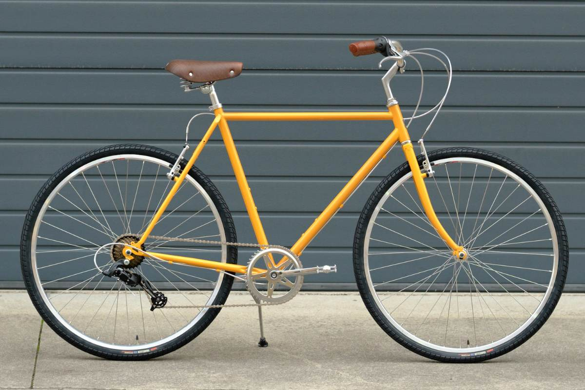
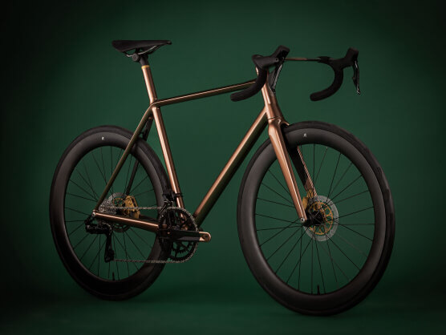
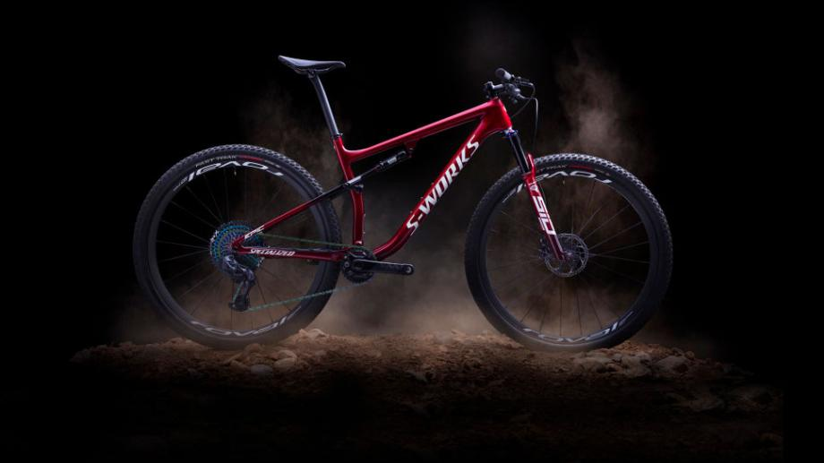

Productos
Ven a Rumbo Bici para descubrir o encontrar la que será tu nueva bicicleta. Tenemos a tu disposición una gran variedad de modelos para todas las tallas, por lo que puedes dar por hecho que encontrarás tu bicicleta ideal.
| Artículos Rumbo Bici Burgos | ||
|---|---|---|
| Bicicletas | Urbanas |  |
| Carretera |  | |
| Montaña |  | |
| Equipación | Vestuario | Verano |
| Invierno | ||
| Cascos | Montaña | |
| Urbanos | ||
| Carretera | ||
| Accesorios | Candados | |
| Bombas | ||
| Luces | ||
| Guardabarros | ||
Servicios
- Ajuste de cambios
- Cambio de neumáticos y cámaras
- Cambios de piñones y cadena
- Centrado de ruedas
- Revisiones:
- Frenos y líquido
- Suspensión delantera y trasera
- General y puesta a punto
Nosotros
Rumbo Bici nació en octubre del 2018 por la fusión de dos reconocidas tiendas de bicicletas en Burgos: JG Bikes, administrada por Pablo Gonzalo y Bicicool, de Rubén Hernando. Desde bien pequeños hemos montado en bici durante muchos años, cosa que seguimos haciendo a día de hoy y que nos permite estar actualizados y tener conocimiento de los nuevos productos que salen al mercado, de aquellos componentes que funcionan notablemente mejor que otros y obviamente de los últimos modelos de bicicletas.
¿Qué opinan nuestros clientes?
Simplemente impresionante, servicio espectacular, trato inmejorable, productos de la máxima calidad. Sin ninguna duda un lugar que si tienes dos dedos de frente deberías de visitar una vez al mes como mínimo. Adrian Briones Diez
Muy buena tienda, excelentes productos, atención muy amable y profesional, es gente que sabe lo que hace para suerte del cliente, muy recomendable este comercio. Cristina Alessandria
Tienda espectacular lo mejor que he visto en Burgos. Muy buena atención gente muy simpática y experta. Totalmente recomendable Miguel P. D.